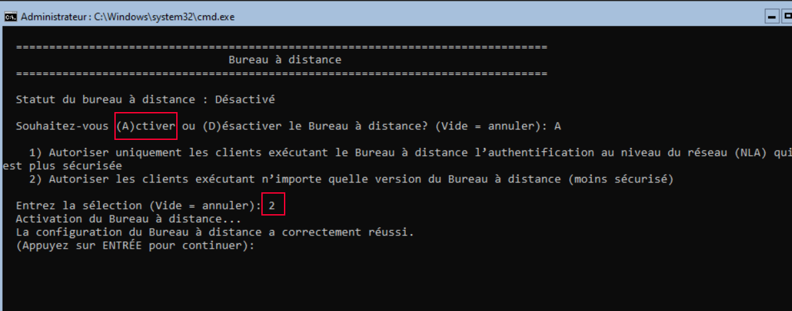
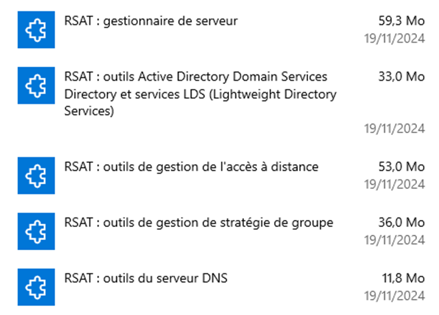
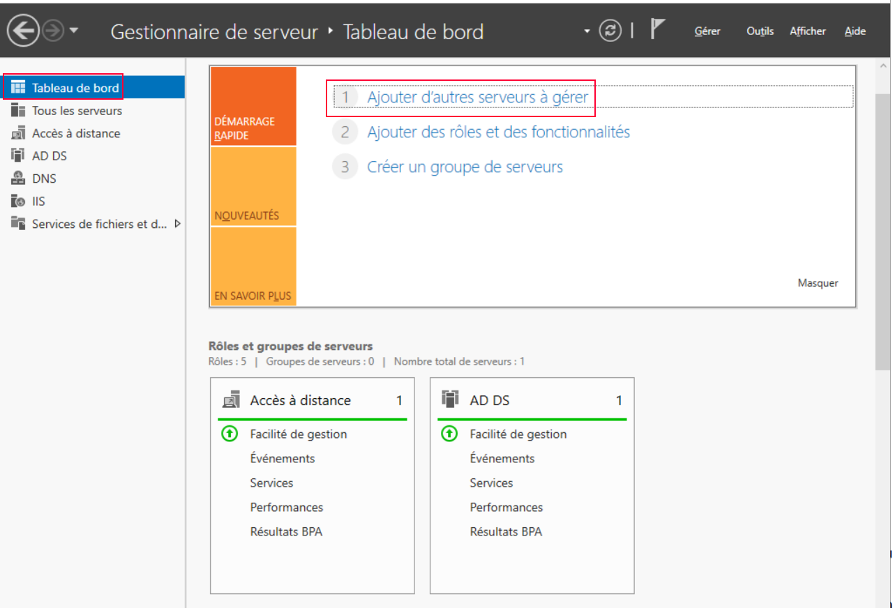
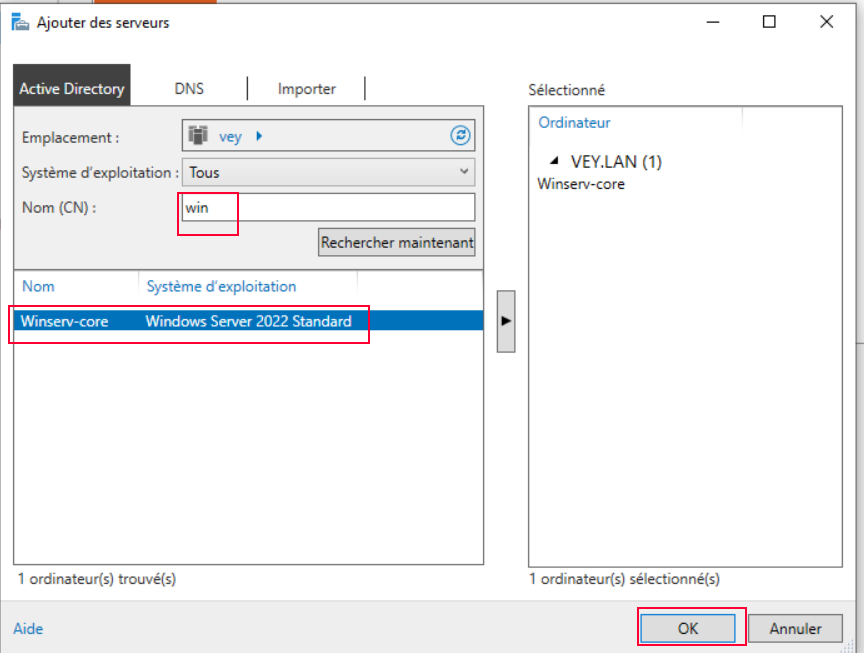

Windows Server Core est une installation minimale de Windows Server, sans interface graphique, administrable uniquement en ligne de commande PowerShell. Ce mode réduit la surface d'attaque et la consommation de ressources par rapport à une installation avec expérience de bureau.
L'objectif ici est de configurer le réseau d'un serveur Core fraîchement installé, d'y créer un premier contrôleur de domaine Active Directory, puis de mettre en place plusieurs méthodes d'administration à distance (RDP, SSH, RSAT).
Pour l'identifier facilement, il est nécessaire de le renommer :
Rename-Computer -NewName "nouveau_nom"
Désactiver l'IPv6 pour éviter des problèmes de compatibilité :
# Désactiver IPv6 Disable-NetAdapterBinding -Name "Adapter Name" -ComponentID ms_tcpip6
Supprimer l'adresse déjà attribuée (le plus souvent une adresse APIPA) sur l'interface LAN. Afficher d'abord l'index de l'interface :
# Affiche l'index de l'interface Get-NetAdapter # Supprime l'adresse IP sur l'interface Remove-NetIPAddress –InterfaceIndex 6 # Appuyer sur [T] pour accepter
Désactiver le DHCP sur l'interface :
Set-NetIpInterface -InterfaceIndex 6 -DHCP Disabled
Attribuer un DNS au serveur :
Set-DNSClientServerAddress -InterfaceIndex 6 -ServerAddresses 8.8.8.8 # Vérifier la configuration DNS Get-DnsClientServerAddress -InterfaceIndex 6 # Ajouter le suffixe DNS Set-DnsClient -InterfaceIndex 6 -ConnectionSpecificSuffix veybert.lan
Assigner une adresse IP sur l'interface, puis redéfinir la passerelle :
New-netipAddress -InterfaceIndex 6 -IpAddress @ip -PrefixLength 16 -Defaultgateway @ip_gateway # Supprimer une route route delete 0.0.0.0 mask 0.0.0.0 # Ajouter une passerelle route add 0.0.0.0 mask 0.0.0.0 192.168.1.253
Redémarrer le serveur pour appliquer les changements :
Restart-Computer
Désactiver le pare-feu sur le serveur, nécessaire pour joindre par la suite un contrôleur de domaine supplémentaire :
Set-NetFirewallProfile -Profile Domain,Public,Private -Enabled False Set-NetFirewallProfile -Profile * -Enabled False
Installer le rôle AD Domain Services et un nouveau domaine, afin de pouvoir intégrer d'autres machines dans l'annuaire :
# Installer le module AD Install-WindowsFeature -name AD-Domain-Services -IncludeManagementTools
Définir les variables nécessaires à l'installation du premier contrôleur de domaine de la forêt :
$CreateDnsDelegation = $false # Zone de délégation $DomainName = "veybert.lan" # Nom de domaine $NetbiosName = "VEYBERT" # Nom NetBios $NTDSPath = "C:\Windows\NTDS" $LogPath = "C:\Windows\NTDS" $SysvolPath = "C:\Windows\SYSVOL" $DomainMode = "WinThreshold" # Version de Windows Server $InstallDNS = $true # Installer le rôle DNS $ForestMode = "WinThreshold" $NoRebootOnCompletion = $false $SafeModeClearPassword = "mot_de_passe" # Mot de passe administrateur du mode restauration $SafeModeAdministratorPassword = ConvertTo-SecureString $SafeModeClearPassword -AsPlaintext -Force
Une fois ces variables créées, installer le premier contrôleur de domaine de la forêt :
$forest = Install-ADDSForest -CreateDnsDelegation:$CreateDnsDelegation ` -DomainName $DomainName ` -DatabasePath $NTDSPath ` -DomainMode $DomainMode ` -DomainNetbiosName $NetbiosName ` -ForestMode $ForestMode ` -InstallDNS:$InstallDNS ` -LogPath $LogPath ` -NoRebootOnCompletion:$NoRebootOnCompletion ` -SysvolPath $SysvolPath ` -SafeModeAdministratorPassword $SafeModeAdministratorPassword ` -Force:$true
net user administrateur * # Invite de commande pour préciser un mot de passe Restart-computer
Trois méthodes permettent d'administrer le serveur à distance.
Permet de se connecter à distance via le protocole RDP, tout en restant en ligne de commande :

Permet d'administrer le serveur en SSH de façon sécurisée, toujours en ligne de commande. Installer le serveur OpenSSH puis ajuster sa configuration :
# Installer le serveur SSH Add-WindowsCapability -Online -Name OpenSSH.Server~~~~0.0.1.0 # Démarrer le service Start-Service sshd # Lancer le service au démarrage Set-Service -Name sshd -StartupType "Automatic" # Se déplacer dans le dossier d'installation SSH cd c:\ProgramData\ssh # Ouvrir le fichier de configuration SSH notepad .\sshd_config # Décommenter la ligne "PasswordAuthentication yes" # Ajouter sous la ligne "Subsystem ftp ..." : Subsystem powershell c:/progra~1/powershell/7/pwsh.exe -sshs -NoLogo
Depuis un poste client, se connecter en SSH via une console PowerShell :
ssh administrateur@ip_serveur
Une fois connecté, on se retrouve en invite de commandes classique : il faut alors lancer la commande powershell.
Les outils RSAT permettent d'administrer l'AD du serveur via une interface graphique, plus pratique à l'usage. Installer la fonctionnalité depuis Applications et fonctionnalités → Fonctionnalités facultatives → Ajouter une fonctionnalité → RSAT : Services de domaine Active Directory, puis installer les outils correspondant aux besoins :

Sur le client, ouvrir le tableau de bord de gestion de serveur puis ajouter le serveur à gérer :

Renseigner le nom du serveur :

Get-NetAdapter avant toute modification.powershell pour basculer.